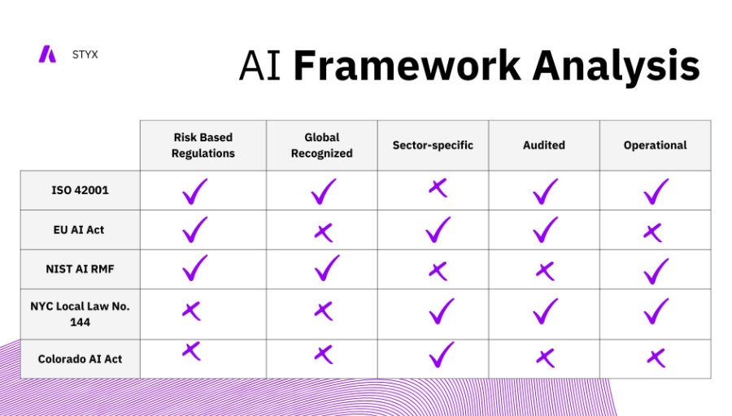

AI Framework Analysis
The landscape of web development is rapidly evolving, driven by advancements in technology and changes in user expectations. In this blog post, we'll explore the future trends that are shaping the world of web development and how you can stay ahead of the curve.
ISO 42001: A Game-Changer in AI Management
Last December, something big happened in the world of AI.
The International Organization for Standardization (ISO) released ISO 42001, and trust me, it's a game-changer.
Why am I so excited? Well, as someone who's been in the tech industry for years, I've seen firsthand how AI has evolved from a Sci-fi concept to a crucial business tool.
But with great power comes great responsibility, right? That's where ISO 42001 comes in.
This new standard isn't just another bureaucratic hoop to jump through. It's the first of its kind - a comprehensive framework for managing AI systems responsibly.
Think of it as a roadmap for organizations navigating the complex terrain of AI implementation.
Why ISO 42001 Matters
- AI Certification: As the inaugural standard for AI management, ISO 42001 sets the benchmark for excellence in the AI domain.
- Comprehensive Framework: Building on the foundation of ISO 27001 (Information management), ISO 42001 provides a robust structure for managing AI systems responsibly.
- Transparency and Fairness: The standard emphasizes requirements for transparency, fairness, and risk identification – crucial aspects in the ethical deployment of AI.
- Flexible Application: Whether you're Creating AI or Integrating AI products into your organization, ISO 42001 offers adaptable guidelines.
Of course, ISO 42001 isn't the only framework out there. But what sets it apart is its integrated approach. It's not just about ticking boxes; it's about embedding responsible AI practices into the very fabric of your organization.
ISO 42001 in the ISO AI Family
ISO 42001 doesn't stand alone. It's part of a growing family of AI-related standards:
- ISO 22989: Lays the groundwork with AI terminology and concepts.
- ISO 23053: Establishes foundational AI and machine learning practices.
- ISO 23894: Provides guidance on AI model deployment and production.
- ISO 27090: (Under Development) Will address Cybersecurity in AI systems.
Standing Out from the Crowd
While other AI regulatory frameworks exist, ISO 42001 distinguishes itself by:
- Offering an integrated approach for organizations developing, providing, or using AI applications.
- Focusing on risk assessment, continual improvement, and leadership commitment.
- Providing a comprehensive scope covering operational planning, performance evaluation, and support.
One thing I particularly appreciate about ISO 42001 is how it builds trust. In my experience, when stakeholders - be it investors, employees, or customers - see that you're following recognized standards, it gives them confidence in your approach.
Looking Ahead
Right now, adopting ISO 42001 is voluntary. But mark my words, it's going to become increasingly important.
As AI continues to shape our world, those who can demonstrate Responsible AI management will have a Significant Edge.